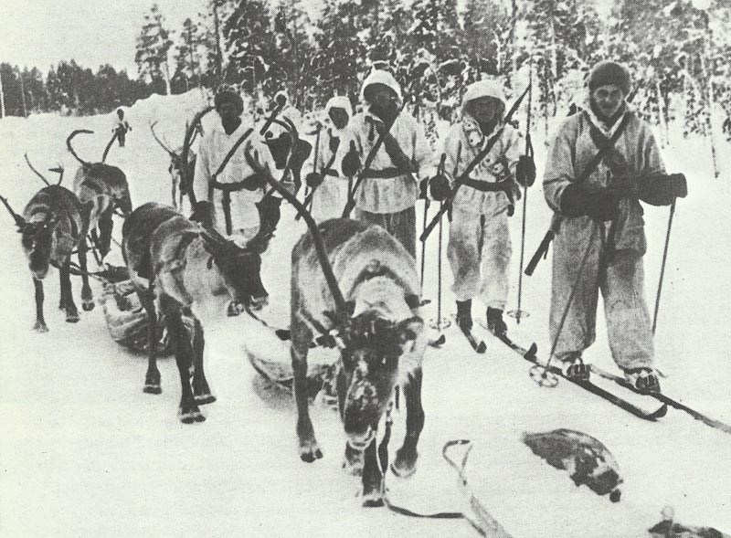

Avantajul URSS-ului
URSS-ul s-a bucurat de un substanțial avantaj numeric față de finlandezi. A avut de trei ori mai mulți soldați, de treizeci de ori mai multe avioane și de sute de ori mai multe tancuri. Cu toate acestea, Armata Roșie a fost lovită grav de epurările lui Stalin de dinainte de război. Aproximativ 30 de mii de ofițeri au fost executați sau închiși. Acest lucru, precum și moralul ridicat al finlandezilor, au făcut ca atacurile sovietice să fie respinse timp de câteva luni de finlandezi.

Avantajul Finlandei
Pe frontul din Istmul Careliei, apărătorii finlandezi s-au bazat pe teren, această zonă fiind împădurită puternic, iar drumurile au fost foarte puține. Aici a avut loc prima victorie finlandeză din timpul campaniei. La Tolvajärvi, două divizii sovietice au fost înfrânte de o forță finlandeză, mult inferioară din punct de vedere numeric.
